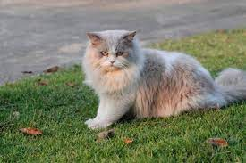
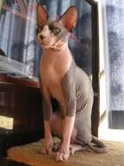
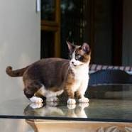
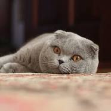

| No | Nama Kucing | Penjelasan Singkat | Lokasi | Gambar |
|---|---|---|---|---|
| 1 | Persia | Ras kucing domestik berbulu panjang dengan karakter wajah bulat dan moncong pendek. Namanya mengacu pada Persia, nama lama Iran. | Persia |  |
| 2 | Maine Coon | Ras kucing tertua dan memiliki ketinggian hingga 1 meter, sehingga mereka menjadi yang kuat dan berotot. Ras kucing tersebut memiliki berat sekitar 4 hingga 7 KG. | Amerika Serikat | |
| 3 | British ShortHair | Ras kucing yang memiliki keturunan dari kucing domestik tradisional Inggris, dengan tubuh kekar yang khas, bulu yang lebat, dan wajah yang lebar. dengan mantel abu-abu-biru solid, mata oranye, dan ekor berukuran sedang. | Inggris | |
| 4 | Siamese | ras kucing Asia pertama yang dikenali dengan jelas. Berasal dari Wichianmat landrace, salah satu dari beberapa varietas kucing asli Thailand (sebelumnya dikenal sebagai Siam), kucing Siam asli menjadi salah satu ras paling populer di Eropa dan Amerika Utara pada abad ke-19. Siamese bergaya modern yang disempurnakan dengan hati-hati. | Thailand | |
| 5 | Bengal | Ras kucing peliharaan yang dibuat dari hibrida kucing domestik, terutama Mau Mesir tutul, dengan kucing macan tutul Asia (Prionailurus bengalensis). Nama breed berasal dari nama taksonomi kucing macan tutul. Bengals memiliki penampilan liar; kilau emas mereka berasal dari keturunan kucing macan tutul mereka, dan mantel mereka mungkim menunjukkan bintik-bintik, mawar, tanda panah, atau marmer. Mereka adalah jenis yang energik yang membutuhkan banyak latihan dan bermain. | Amerika Serikat | |
| 6 | Sphynx | jenis kucing yang dikenal karena kurangnya bulu. Kebotakan pada kucing adalah mutasi genetik yang terjadi secara alami, dan Sphynx dikembangkan melalui pembiakan selektif hewan-hewan ini, mulai tahun 1960-an. Menurut standar breed, kulit harus memiliki tekstur kulit chamois, karena memiliki bulu halus, atau kucing mungkin sama sekali tidak berbulu. Kumis mungkin ada, utuh atau rusak, atau mungkin sama sekali tidak ada. Kucing memiliki kepala yang sempit dan panjang serta kaki yang berselaput. Kulit mereka adalah warna bulu mereka, dan semua tanda kucing biasa (solid, point, van, tabby, tortie, dll.) dapat ditemukan pada kulit kucing Sphynx. Karena mereka tidak memiliki bulu, kucing Sphynx kehilangan panas tubuh lebih mudah daripada kucing yang dilapisi, membuat mereka berdua hangat saat disentuh dan cenderung mencari tempat yang hangat. | Canada |  |
| 7 | Ragdoll | Ragdoll adalah jenis kucing dengan bulu titik warna dan mata biru. Morfologinya besar dan berbobot, dan memiliki bulu semi panjang dan lembut seperti sutra. Ragdoll dibiakkan oleh peternak Amerika Ann Baker pada 1960-an. Mereka terkenal karena sifatnya yang jinak, tenang, temperamen, dan penuh kasih sayang. Nama 'Ragdoll' berasal dari kecenderungan individu dari indukan asli untuk menjadi lemas dan santai saat diangkat. Ragdoll ini sangat populer di Inggris Raya dan Amerika Serikat. Ragdoll sering dikenal sebagai "kucing seperti anjing" atau "kucing seperti anak anjing", karena kecenderungan mereka untuk mengikuti orang-orang di sekitar, penerimaan mereka terhadap penanganan, dan kurangnya agresivitas mereka terhadap hewan peliharaan lain. Ragdoll dapat dibedakan dengan tanda berbentuk V terbalik di dahi mereka, mata biru bulat besar, bulu lembut dan tebal, anggota badan tebal, ekor panjang, dan tubuh lunak. Cincin warna mereka biasanya tiga warna atau dua warna. | Amerika Serikat | |
| 8 | Munchkin | jenis kucing yang relatif baru yang ditandai dengan kakinya yang sangat pendek, yang disebabkan oleh mutasi genetik. Munchkin dianggap sebagai ras asli kucing kerdil. Banyak kontroversi meletus atas breed tersebut ketika diakui oleh The International Cat Association (TICA) pada tahun 1997 dengan kritik menyuarakan keprihatinan atas potensi masalah kesehatan dan mobilitas. Banyak asosiasi kucing silsilah di seluruh dunia telah menolak untuk mengakui kucing Munchkin karena kesejahteraan ras dan tingkat keparahan masalah kesehatan, termasuk Dewan Pemerintahan Kucing Fancy (GCCF). Nama "munchkin" berasal dari penduduk kecil penulis L. Frank Baum di Munchkin Country, yang berasal dari novel tahun 1900, The Wonderful Wizard of Oz. | Amerika Serikat |  |
| 9 | Scottish | Scottish Fold adalah jenis kucing domestik dengan mutasi gen dominan alami yang mempengaruhi tulang rawan di seluruh tubuh, menyebabkan telinga "melipat", membungkuk ke depan dan ke bawah ke arah depan kepala, yang memberi kucing apa yang sering digambarkan sebagai penampilan "seperti burung hantu". Awalnya disebut lop-eared atau lops setelah kelinci lop-eared, Scottish Fold menjadi nama breed pada tahun 1966. Bergantung pada pendaftarnya, Scottish Folds longhair dikenal sebagai Highland Fold, Scottish Fold Longhair, Longhair Fold, dan Coupari. | Inggris |  |
| 10 | Norwegian Forest | jenis kucing domestik yang berasal dari Eropa Utara. Trah alami ini beradaptasi dengan iklim yang sangat dingin, dengan lapisan atas yang panjang, berkilau, rambut [perlu klarifikasi] dan lapisan bawah wol untuk insulasi. Nenek moyang trah ini mungkin adalah ras kucing berbulu pendek yang dibawa ke Norwegia sekitar tahun 1000 M oleh Viking, yang mungkin juga membawa kucing berbulu panjang, seperti nenek moyang Angora Siberia dan Turki modern. Selama Perang Dunia II, kucing Hutan Norwegia hampir punah; kemudian program pengembangbiakan Norwegian Forest Cat Club meningkatkan jumlah kucing tersebut. Itu terdaftar sebagai breed dengan European Fédération Internationale Féline pada 1970-an, ketika seorang pemelihara kucing, Carl-Fredrik Nordane, memperhatikan breed tersebut dan berusaha untuk mendaftarkannya. Trah ini sangat populer di Norwegia, Denmark, Swedia, Islandia, dan Prancis. Ini adalah kucing besar, kuat, mirip dengan jenis Maine Coon, dengan kaki panjang, ekor lebat, dan tubuh kokoh. Ia sangat pandai memanjat, sebagian karena cakarnya yang kuat. Umurnya biasanya 14 hingga 16 tahun. Penyakit ginjal dan jantung telah dilaporkan pada breed ini. Khususnya pada jenis ini, penataan ulang kompleks enzim percabangan glikogen (GBE1) dapat menyebabkan keruntuhan hipoglikemik perinatal dan degenerasi neuromuskular onset remaja akhir pada penyakit penyimpanan glikogen tipe IV. | Norwegia | |
Klik link dibawah untuk kembali ke Halaman sebelumnya :
Penjelasan Kucing